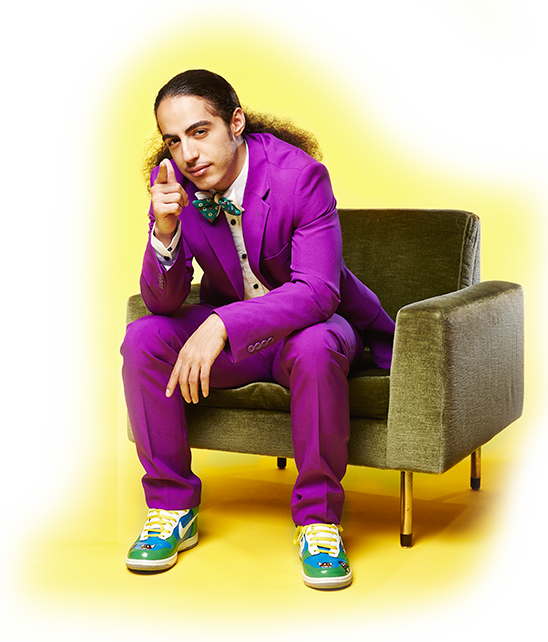

Die persische Gagmaschine Masud präsentiert dir das abgefahrenste Zeug aus den Untiefen des Internets. Der smarte Bro feuert dabei mehr unerlaubte Sprüche raus als Kim-Jong Raketen und zeigt mehr Nieten als ne Losbude. Schalte dich also rein, denn wer zu web lacht, lacht am besten!


Ab 28. August
- FAIL IN LOVE WITH MASUD.
- TIERPFLEGER FÜR ALLE, DIE SICH IM INTERNET ZUM AFFEN MACHEN.
- BRO KLICKT ALLES WEG, WAS NICHT BEI 3 OFFLINE IST.
- GEILER ALS SELBER KLICKEN? BRUDI BEIM KLICKEN ZUGUCKEN!
- LÄSSIGER BRO ZEIGT ALLES VON KATZEN BIS KOTZEN.
- WEBCLIPS MIT MASUD: HART ABER FAIL.
- HAMMER TYP MIT PFERDESCHWANZ ZEIGT VOR PUBLIKUM DIE GANZ DICKEN DINGER.
- BRUDI BRINGT BURNER.
- BRO ZEIGT FRESHE FUNVIDEOS FÜR FOLLOWER.
- GUT INTEGRIERTER BABO EXPORTIERT INTERNETHITS INS WOHNZIMMER.
- HOCHMUT KOMMT VOR DEM FAIL.
- MASUD IST DAS HAARTESTE, WAS DAS WEB ZU BIETEN HAT.
- BRO HAT JETZT SHOW!

Über die Show